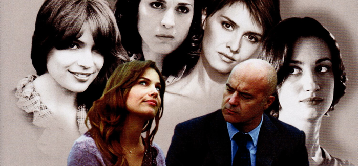

Lama Film

scritto e diretto da : Gianluca Maria Tavarelli
con: Luca Zingaretti, Giorgio Tirabassi, Andrea Renzi,Alessandro Gassman,Valeria MIlillo,Francesca Inaudi, Micaela Ramazzotti, Paola Cortellesi, Valerio Binasco, Donatella Finocchiaro, Michela Cescon, Giuseppe Battiston, Rocco Papaleo, Mimma Lovoi, Daniele Griggio, Susy Laude, Zoe Tavarelli, Giovanni Videntin, Giuseppe Antignani, Gianni Lillo.
produzione: Taodue film
produzione esecutiva: Lama Film
scritto e diretto da: Gianluca Maria Tavarelli
fotografia: Roberto Forza
montaggio: Alessandro Heffler
scenografia: Sonia Peng
costumi: Loredana Buscemi
suono in presa diretta: Remo Ugolinelli
aiuto regia: Igor Borghi
musiche: Luigi Seviroli
paese: Italia 2006
genere: Drammatico
durata: 96 min
formato: Colore 35 mm
USCITA CINEMA: 15/06/2007
Note:
Presentato in concorso alla 63MA MOSTRA INTERNAZIONALE D'ARTE CINEMATOGRAFICA DI VENEZIA (2006) nella sezione “ORIZZONTI”.

Non prendere impegni stasera
Storie di quarantenni in crisi che si incrociano, in fuga dal passato e dalle sue delusioni e dal presente caotico delle metropoli piene di rumore e solitudine, cercando rifugio in compagnie occasionali e senza pretese, per sopperire alla mancanza di amore. Quando scopre di avere una malattia inguaribile, Pietro capisce che è arrivato il momento in cui non potrà più scendere a patti con la sua solitudine. Cerca allora conforto e aiuto in Cinzia, sua amica da sempre. Proprio accanto a lei, così fragile, ma così sicura delle sue scelte, Pietro saprà ingaggiare una lotta contro il male che lo sta divorando. Andrea, un professionista affermato, conosce Veronica, una ragazza più giovane di lui che fa la commessa in un grande centro commerciale. I due sono profondamente diversi e Veronica vive in un mondo sconosciuto ad Andrea ma, al contrario di lui, la ragazza sa ancora essere se stessa e provare sentimenti veri e profondi. Al suo fianco, Andrea conoscerà di nuovo il significato dell'amore e riuscirà a lasciare definitivamente sua moglie. Alessandro ha paura di ogni cosa, anche di vivere, e Irene, la sua compagna, non è più in grado di fare i conti ogni giorno con un uomo che non riesce a guardare fuori da se stesso. Nanni è un uomo solo e quando rincontra Paola, una sua ex fidanzata che sta per sposarsi, si rifugia tra le sue braccia per cercare la serenità che non ha più. Ma è troppo tardi per chi si è perso tanto tempo prima. Giorgio e Mariella vivono chiusi nella loro camera da letto, senza il coraggio di ammettere i loro errori e cercando ogni giorno di ricominciare. Infine c'è Iole che, in attesa dell'amore, dovrà imparare non solo a cercarlo ma anche ad accoglierlo.